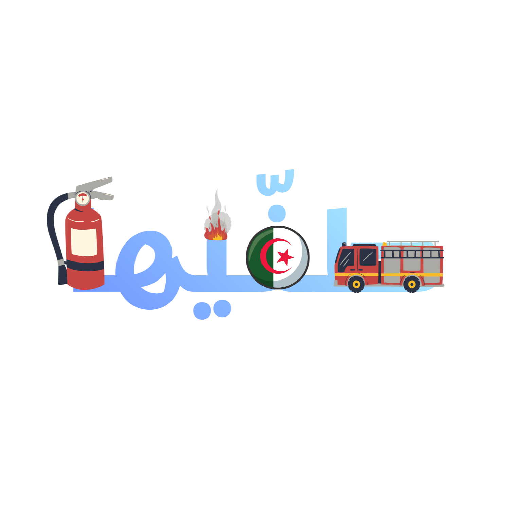

جميع الحقول المعلّمة بـ (*) إلزامية. لا حاجة لإنشاء حساب لإرسال البلاغ.
حدّد الولاية والبلدية التي وقع بها الحريق.
اختر الوصف الأقرب للوضع الحالي في مكان الحريق.
اختر جهة واحدة أو أكثر تحتاج إلى التدخل في مكان الحريق.
استخدم موقعك الحالي أو اختر النقطة على الخريطة لتحديد مكان الحريق بدقة.
اضغط على الخريطة لتحديد موقع الحريق بدقة.